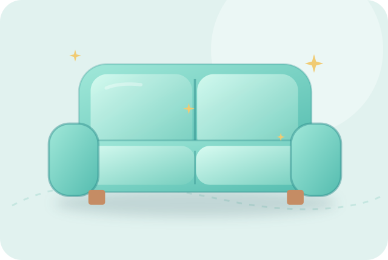
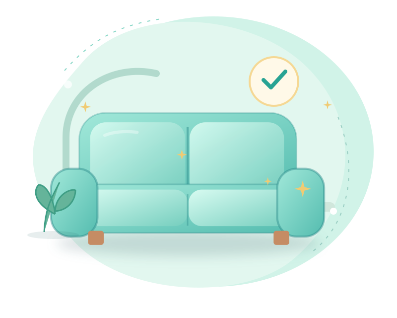
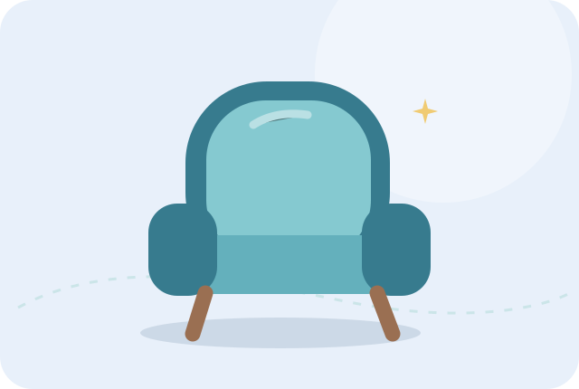
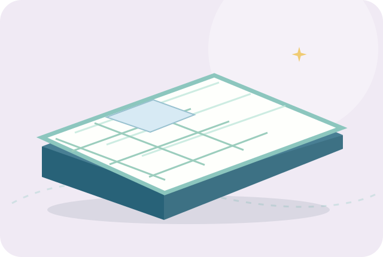
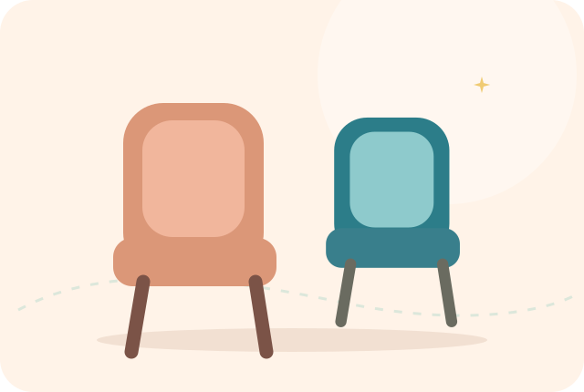
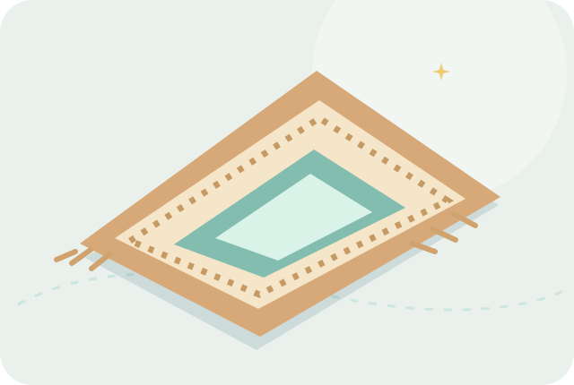
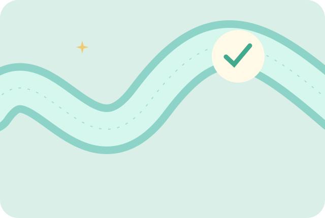
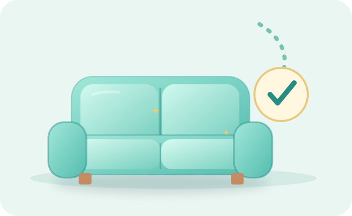
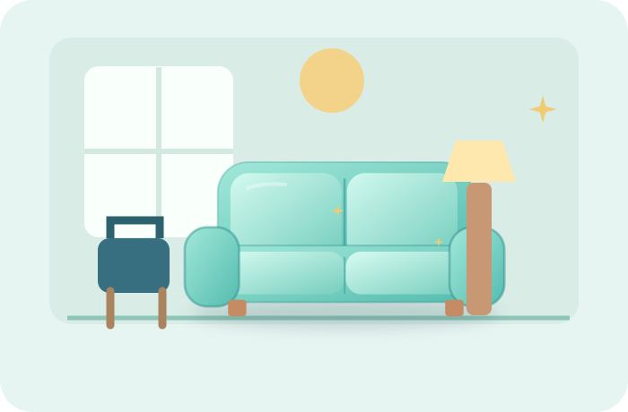
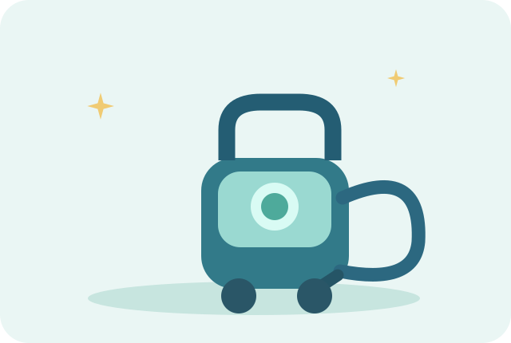

01 / МЯГКАЯ МЕБЕЛЬ
Диваны
Прямые, угловые и модульные
Диваны, кресла, матрасы и ковры тоже заслуживают заботы. Выберите, что нужно почистить, — и подготовьте запрос на индивидуальную оценку.

От мягкого дивана до ковролина. Выберите нужную услугу, а детали состояния и материала укажите в запросе.

Прямые, угловые и модульные

Домашние и офисные модели

Одно- и двуспальные

С мягкой спинкой и сиденьем

Ковры и паласы
Для дома и рабочих пространств
Набор услуг основан на опубликованных описаниях и отзывах. Актуальную возможность чистки конкретного изделия следует уточнить у компании.
Интерактивно сравните два состояния дивана. Эта графика показывает идею обновления, а не гарантирует конкретный результат химчистки.
Описание проблемы помогает выбрать подходящие действия. Результат зависит от ткани, возраста загрязнения и состояния изделия.

Ткань · фактура · состояниеОпишите происхождение загрязнения и то, насколько давно оно появилось. Это помогает предварительно оценить задачу.
Регулярный уход за мебельной обивкой, подушками, спинками и текстильными поверхностями.
Сообщите мастеру об особенностях изделия заранее. Возможность и степень удаления загрязнения оцениваются индивидуально.
Соберите несколько предметов в один запрос. Цена не рассчитывается автоматически — для этого нужен подтверждённый прайс и оценка состояния мебели.
Можно добавить разные виды мебели и указать количество.
Выберите задачу и расскажите подробности.
Только локальный предпросмотр. Ничего не загружается на сервер.
Примерный сценарий обращения. Реальные условия выезда, сроки, состав работ и цена согласовываются непосредственно с компанией.

Укажите мебель, количество и загрязнения; при необходимости подготовьте фотографии.
Мастер может запросить материал, размеры и другие сведения для оценки.
Стоимость, удобное время и возможность чистки определяются с компанией.
Правила дальнейшего ухода и время высыхания зависят от конкретного изделия.
Мягкая мебель в кафе, переговорных и зонах ожидания тоже требует ухода. В отзывах компании есть пример чистки мебели в кофейне.
Составить запрос для организации Возможность обслуживания конкретного объекта и условия расчёта уточняются у компании.
Вместо придуманных отзывов — переход к открытой карточке компании в 2ГИС, где можно прочитать мнения и посмотреть фотографии.
Читать отзывы в 2ГИСПоказатели могут измениться после даты проверки.

Подтверждённого актуального прайса для этой демоверсии нет. Стоимость зависит от размеров, обивки и характера загрязнения. Можно составить запрос выше и уточнить цену у компании.
Гарантировать полное удаление любого пятна нельзя. Результат зависит от происхождения, давности загрязнения и особенностей материала. Лучше заранее описать проблему.
Точное время зависит от материала, способа чистки, температуры и вентиляции. Уточните условия для своей мебели непосредственно у мастера.
В конфигураторе можно указать несколько предметов в одном запросе. Возможность выполнения работ, дату и стоимость нужно согласовать с компанией.
Необязательно. Если состав ткани неизвестен, это можно указать в заявке. По фотографии и дополнительным сведениям мастер подскажет дальнейшие действия.
Нет. В демонстрационной версии фотографии отображаются только в браузере. Текст запроса можно скопировать, а фотографии при необходимости отправить самостоятельно через выбранный вами канал.
Контактные сведения взяты из открытых источников. Этот сайт демонстрационный, поэтому уточняйте действующие услуги, стоимость и запись напрямую у компании.
Адрес, указанный в карточке 2ГИС. Порядок посещения и необходимость предварительной записи уточняйте по телефону.